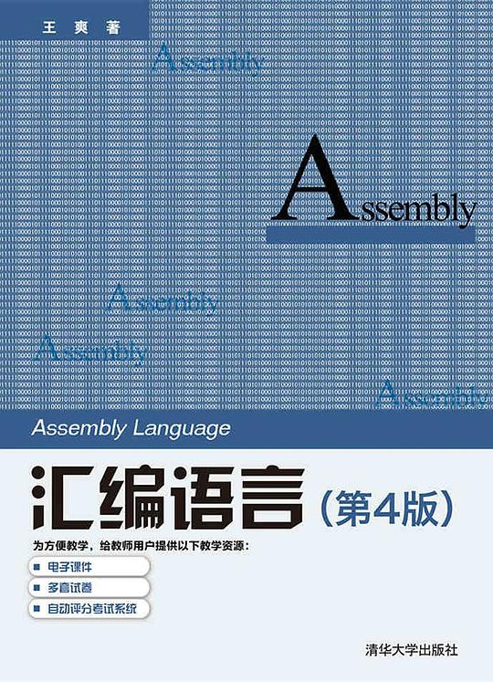
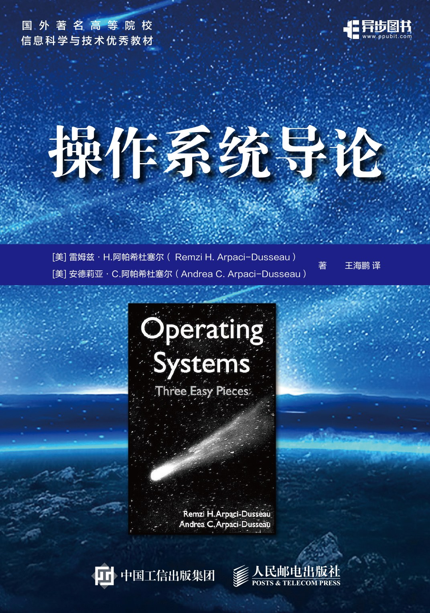
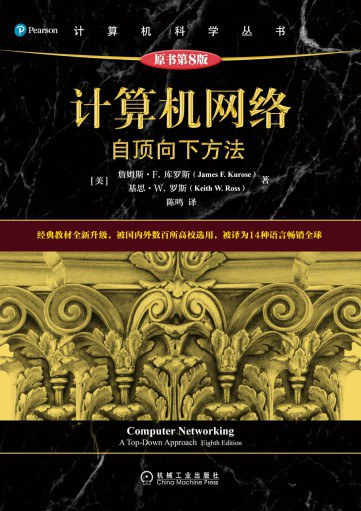
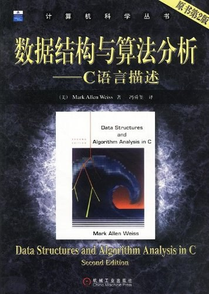

计算机科学书籍推荐
24年9月初决定考研，去学习一些计算机科学的前沿技术，比如NLP、CV又或者是AI。在准备考试的过程中，发现大部分高等院校的初试专业课考试是408，也就是计算机专业基础综合(数据结构、计算机组成原理、操作系统、计算机网络)。
那么结合我从98年开始接触计算机，近14年的相关行业工作经验，推荐几本我在计算机科学与技术领域读过的非常出色的书籍，按照由浅入深，循序渐进的原则给出列表。部分书籍现在是高等院校的专业课用书，我会用📚表情标注出来。
编码:隐匿在计算机软硬件背后的语言
如果要从0开始对一个从未接触过计算机的人讲述计算机的基本工作原理，这本书再适合不过了。
它用白话文，从手电筒、布莱叶盲文、摩斯电码开始，由浅入深、循序渐进的描述了计算机的发展过程。
既没有晦涩难懂的专业术语，也没有断层式的章节分布，这本书既有中文版也有英文版。

汇编语言(第四版) 📚
王爽老师的《汇编语言》，是国内原创的、为数不多的可以和国外计算机经典教材相提并论的书籍。
行文通俗易懂、章节内容环环相扣，课后习题具有非常强的针对性，是衔接计算机硬件与C语言之间的桥梁。在阅读完《编码》以后，即可深入到CPU的世界一探究竟。这本书已经被广泛使用在大中专院校的汇编语言课程中，并受到无数好评。

C程序设计语言 📚
看完前面两本书以后，会有一种计算机科学与技术难道就是用汇编这种晦涩难懂的语言和计算机打交道的么？
有没有好记一点的、与人类语言相近、通俗易懂的编程语言，以说人话的方式进行编程活动呢？有的，在计算机科学与技术发展史上，C语言可以说是编程语言届的iPhone 1。这本书也是C语言的作者所编写，两位计算机科学家由浅入深，从华氏温度与摄氏温度转换开始，一步一步的讲解C语言的特性和使用方法。这本书既有中文版也有英文版。另外强调一下，谭浩强并不是C语言之父。

深入理解计算机系统 📚
这本书英文名叫 Computer Systems: A Programmer’s Perspective，大名鼎鼎的CSAPP就是它了。以程序员的视角，用C程序为切入点，讲述了计算机各个器件的工作原理。计算机科学领域的九阳神功，被誉为CS人的圣经。前面学完了C和汇编，再看这本书基本就没有任何门槛了。

看到这里，计算机零部件的基本工作原理就讲完了。整个计算机历史，在没有操作系统之前，就是这样的。所以，聪明的程序员为了方便操作零部件，统一管理计算机，发明出来了一个玩意，叫 操作系统。
操作系统导论 📚
操作系统是现代计算机管理零部件的软件，是一切运行在其上之程序的基础。这本书采用历史教学法，使用时间线的方式，从磁盘操作系统，一直讲到现代操作系统，是操作系统领域不可多得的好书。

学到这里，整个计算机单机系统就全部学完了。但是，现代计算机是互相连接的啊，没有网络怎么可以呢？！
计算机网络：自顶向下方法 📚
这本讲述计算机网络的书籍，一经问世，就广为流传。而且采用了自顶向下的方法，就是先说应用层，比如浏览器，电子邮件等看得见摸得着的东西，然后再向下讲述传输层、链路层、物理层等看不见摸不着的理论。唯一我觉得不足的地方就是网络上对翻译的质量有点微词，如果有能力，建议直接看英文原版。
原版传送门

OK，到这里整个计算机科学的基础课，计算机组成原理、操作系统、计算机网络，已经出现了。但是，人们在编程的时候，为了提高对内存和CPU的利用率等等，总结出来了一套葵花宝典。学懂它，就可以加速自己的程序，当然不用自宫。这门学科就是 数据结构。
数据结构与算法分析 📚
如果你不懂数据结构与算法，那么你写出来的程序可能比别人的要慢很多，这是我在实际工作中的体会。这本书已经被全世界将近500所大学作为教材使用，学好它，才能更懂计算机科学与技术。这本书是C语言描述的，前面已经学过了，相信很快就可以入门数据结构。
